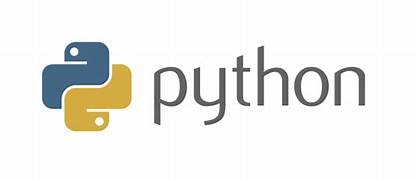

Explore my skills
-
 HTML
HTML
-
 CSS
CSS
- Python
-
 Java
Java
-
 C
C
- Canva
>Hey there! I’m a BTech IT student with a minor in AI and a major love for tech that makes life easier. I enjoy turning complex problems into simple, creative solutions—whether that’s building smart apps, designing clean user interfaces, or experimenting with new.
I'm passionate about learning by doing, thrive in team brainstorms, and love mixing logic with creativity. You’ll usually find me juggling code, Canva, and caffeine—with a few hackathons and design sprints thrown in for fun.
Fueled by coffee, chaos, and occasional existential musings, I believe the best ideas come with a smile.
HTML
CSS
Java
C
This AI-powered website monitors environmental factors like pollen, air quality, and weather to predict allergy spikes. By analyzing real-time data, it provides timely alerts to help users manage and mitigate allergic reactions effectively.
A comprehensive tool designed for students to manage their finances efficiently. It tracks income, expenses, and savings goals, offering features like budgeting assistance and expense categorization to promote healthy financial habits.
Utilizing machine learning algorithms, this system predicts suitable insurance products and pricing by analyzing individual factors such as age, income, and purchasing history. It personalizes insurance recommendations, enhancing customer satisfaction and aiding insurers in risk assessment.
Employing advanced AI techniques, this project focuses on the early detection of breast cancer by analyzing medical imaging data like mammograms. It aims to identify potential malignancies with higher accuracy and speed, supporting healthcare professionals in diagnosis and improving patient outcomes.

LinkedIn: linkedin.com/in/itscharuu
G-Mail: latacharu859@gmail.com
Phone Number: +91 9142736521